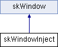

Inheritance diagram for skWindowInject:

Public Member Functions | |
| skWindowInject (skWindowManager *creator) | |
| ~skWindowInject () override | |
| void | create (const char *title, SKuint32 w, SKuint32 h, SKuint32 flags) override |
| Called when the backend window should actually be created. More... | |
| void | refresh (void) override |
| Invalidates the window so that a redraw event will take place. More... | |
| void | show (bool v) override |
| Shows or hides the window. More... | |
| void | flush (void) override |
| Swaps internal window buffers. More... | |
| SKsize | getWindowHandle (void) override |
| Provides access to the underlying window handle. More... | |
 Public Member Functions inherited from skWindow Public Member Functions inherited from skWindow | |
| virtual | ~skWindow () |
| skWindowManager * | getCreator (void) const |
| |
| skWindowContext * | getContext () const |
| |
| skKeyboard * | getKeyboard (void) const |
| |
| skKeyboard & | getKeyboardRef () const |
| |
| skMouse * | getMouse (void) const |
| |
| skMouse & | getMouseRef () const |
| |
| SKuint32 | getWidth (void) const |
| |
| SKuint32 | getHeight (void) const |
| |
| void | close () |
| Signals that this window should close. More... | |
Additional Inherited Members | |
| Protected Member Functions inherited from skWindow | |
| void | __notifyMotion (const SKint32 &xPos, const SKint32 &yPos) const |
| Internal method that should be called after any motion information has been collected from a platform event. More... | |
| void | __notifyWheel (const SKint32 &zDelta) const |
| Internal method that should be called after any wheel information has been collected from a platform event. More... | |
| void | __notifyButton (const SKint32 &button, const SKuint8 &state) const |
| Internal method that should be called after any button information has been collected from a platform event. More... | |
| void | __notifyKey (const SKint32 &key, const SKuint8 &state) const |
| Internal method that should be called after any key information has been collected from a platform event. More... | |
| void | __clearRelativeStates () const |
| Resets any relative change information in input classes. More... | |
| skWindow (skWindowManager *creator) | |
| Protected Attributes inherited from skWindow | |
| skWindowManager * | m_creator |
| skWindowContext * | m_context |
| skKeyboard * | m_keyboard |
| skMouse * | m_mouse |
| SKuint32 | m_width |
| SKuint32 | m_height |
Constructor & Destructor Documentation
◆ skWindowInject()
| skWindowInject::skWindowInject | ( | skWindowManager * | creator | ) |
◆ ~skWindowInject()
|
override |
Member Function Documentation
◆ create()
|
overridevirtual |
Called when the backend window should actually be created.
- Parameters
-
title The window title width the desired window's width in pixels height the desired window's height in pixels flags Extra creation flags
Implements skWindow.
◆ flush()
Swaps internal window buffers.
Implements skWindow.
◆ getWindowHandle()
|
overridevirtual |
Provides access to the underlying window handle.
The win32 backend returns HWND pointer, the SDL and X11 backend return an integer id value.
- Returns
- Returns the underlying window system window handle.
Implements skWindow.
◆ refresh()
Invalidates the window so that a redraw event will take place.
Implements skWindow.